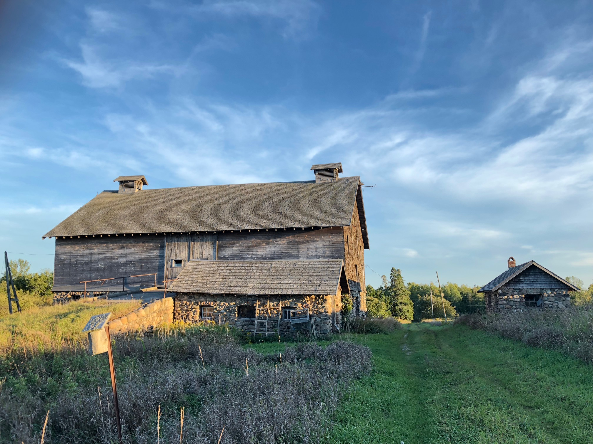

Volunteer
PUBLICATIONS
During my time at Conservation Halton I volunteered to write an article for the local Grindstone Magazine representing
the Ecology department. The following year I had the opportunity once again to have another one of my articles
published by the same magazine - this time to fulfill academic requirements for the Ecosystem Management
Technologist program at Fleming College. The articles are listed below:
Bearing South - Covers migration patterns of Black Bears in Ontario. Published October 17, 2018 in The Grindstone
Bedroom Communities - Covers the effects of Bedroom Communities on the environment. Published March 5, 2019 in The Grindstone

NATURAL HERITAGE TECHNICIAN
Oak Ridges Moraine Land Trust
September 2018 - December 2018
- Completed a Baseline Documentation Report (BDR) for the purposes of attaining a Conservation
Easement Agreement (CEA) on a 100-acre private property located in Innisfil, Ontario
- Successfully completed a full Ecological Land Classification on the property, which
included species inventory and soil analysis
- Prepared mapping of the property showing ELC polygons, violations to the CEA, and
invasive species using ArcGIS applications and GPS devices
- The CEA was accepted by the Ontario Land Trust Alliance as of January 2019
FOREST RESEARCH ASSISTANT
Petawawa Research Forest - NRCan

April 2018
- Updated the Species at Risk file, which involved researching any new developments
or changes to Species at Risk that were present in the area and within the boundaries of the Forest.
- Calibrated and tested out new equipment in the field to assist in forest
measurement tasks; including TruPulse 360 Range Finder, TopCon, and a PA System
- Performed Stand Assessments, data collection of the Permanent Sample
Plots, and Stem Mapping for the GeoSLAM Ground Lidar project
- Created maps for the tree plant assessment plots, and the volunteer tree plant
using ArcMap
WATER FESTIVAL ACTIVITY PRESENTER
Niagara Peninsula Conservation Authority
June 2012
- Educated the public on the importance of water conservation and practices for
filtering water; responsible for setting up the activity centre each day